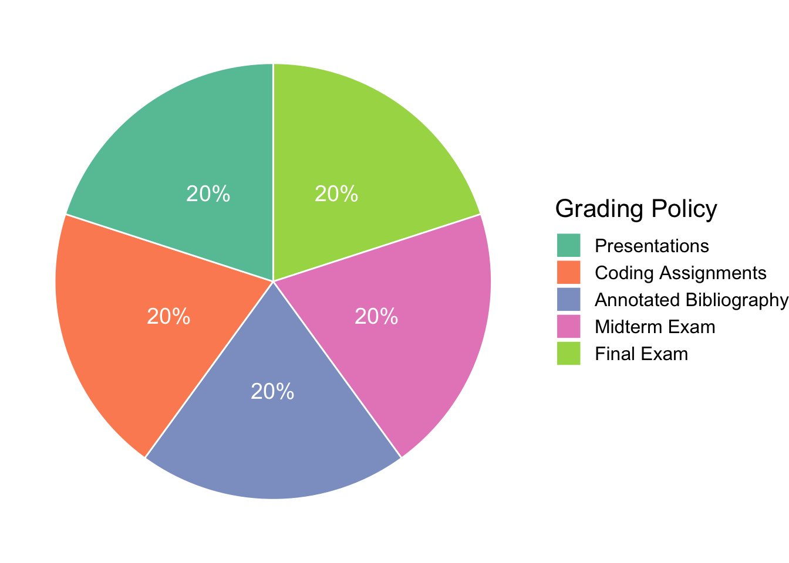

ENC2045: Computational Linguistics
This site is last-updated on 2023-12-24
Annoucements
Important course information will be posted on this web page and announced in class. You are responsible for all material that appears here and should check this page for updates frequently.
- 2023-12-24: The current version of the course website is based on the Spring Semester, 2021. It will be updated when it is offered next time, which is, hopefully, the spring of 2023.
- 2023-12-24: This course is designed for linguistics majors. If you are NOT a linguistics major, please contact the instructor for course enrollment.
- 2023-12-24: This course has prerequisites. A test on python basics will be conducted at the beginning of the semester. Please read the FAQ very carefully. This course is NOT OPEN to auditors.
Course Description
Computational Linguistics (CL) is now a very active sub-discipline in applied linguistics. Its main focus is on the computational text analytics, which is essentially about leveraging computational tools, techniques, and algorithms to process and understand natural language data (in spoken or textual formats). Therefore, this course aims to introduce useful strategies and common workflows that have been widely adopted by data scientists to extract useful insights from natural language data. In this course, we will focus on textual data processing.
A selective collection of potential topics may include:
- A Pipeline for Natural Language Processing
- Text Normalization
- Text Tokenization
- Parsing and Chunking
- Issues for Chinese Language Processing (Word Segmentation)
- Feature Engineering and Text Vectorization
- Traditional Machine Learning
- Classification Models (Naive Bayes, SVM, Logistic Regression)
- Common Computational Tasks:
- Sentiment Analysis
- Tex Clustering and Topic Modeling
- Deep Learning and Neural Network
- Neural Language Model
- Sequence Models
- RNN
- LSTM/GRU
- Sequence-to-sequence Model
- Attention-based Models
- Transfer Learning
- Large Language Models(LLM) & Retrieval-Augmented Generation (RAG)
- Multimodal Processing
This course is extremely hands-on and will guide the students through classic examples of many task-oriented implementations via in-class theme-based tutorial sessions. The main coding language used in this course is Python . We will make extensive use of the language. It is assumed that you know or will quickly learn how to code in Python. In fact, this course assumes that every enrolled student has working knowledge of Python. (If you are not sure if you fulfill the prerequisite, please contact the instructor first.)
A test on Python Basics will be conducted on the first week of the class to ensure that every enrolled student fulfills the prerequisite. (To be more specific, you are assumed to have already had working knowledge of all the concepts included in the book, Lean Python: Learn Just Enough Python to Build Useful Tools). Those who fail on the Python basics test are NOT advised to take this course.
Please note that this course is designed specifically for linguistics majors in humanities. For computer science majors, please note that this course will not feature a thorough description of the mathematical operations behind the algorithms. We focus more on the practical implementation.
Course Schedule
(The schedule is tentative and subject to change. Please pay attention to the announcements made during the class.)
| Week | Date | Topic |
|---|---|---|
| Week 1 | 2023-02-23 | Python Quiz + Computational Linguistics Overview |
| Week 2 | 2023-03-01 | NLP Pipeline |
| Week 3 | 2023-03-08 | Machine Learning Basics: Regression and Classification |
| Week 4 | 2023-03-15 | Naïve Bayes, Logistic Regression |
| Week 5 | 2023-03-22 | Feature Engineering and Text Vectorization |
| Week 6 | 2023-03-29 | Common NLP Tasks |
| Week 7 | 2023-04-05 | Holiday |
| Week 8 | 2023-04-12 | Midterm Exam |
| Week 9 | 2023-04-19 | Neural Network: A Primer |
| Week 10 | 2023-04-26 | Deep Learning NLP and Word/Doc Embeddings |
| Week 11 | 2023-05-03 | Sequence Model I: RNN and Neural Language Model |
| Week 12 | 2023-05-10 | Sequence Model II: LSTM and GRU |
| Week 13 | 2023-05-17 | Sequence Model III: Sequence-to-Sequence Model & Attention |
| Week 14 | 2023-05-24 | Transformer, BERT, Transfer Learning, and Explainable AI |
| Week 15 | 2023-05-31 | LLM, RAG, and Multimodal Processing |
| Week 16 | 2023-06-07 | Final Exam |
Course Requirement

Course Materials
All the course materials are available on the course website. Please consult the instructor for the direct link to the course materials. They will be provided as a series of online packets (i.e., handouts, script source codes etc.) on the course website.
Logistics
- Course Website: ENC2045 Computational Linguistics
- Instructor’s Email Address: alvinchen@ntnu.edu.tw
- Instructor’s Name: Alvin Chen
- Office Hours: By appointment
If you have any further questions related to the course, please consult FAQ on our course website or write me at any time at alvinchen@ntnu.edu.tw.
Disclaimer & Agreement
While I have made every attempt to ensure that the information contained on the Website is correct, I am not responsible for any errors or omissions, or for the results obtained from the use of this information. All information on the Website is provided “as is”, with no guarantee of completeness, accuracy, timeliness or of the results obtained from the use of this information, and without warranty of any kind, express or implied.
You may print a copy of any part of this website for your personal or non-commercial use. Without the author’s prior written consent, you cannot disclose confidential information of the website (e.g., log-in username and password) to any third party.